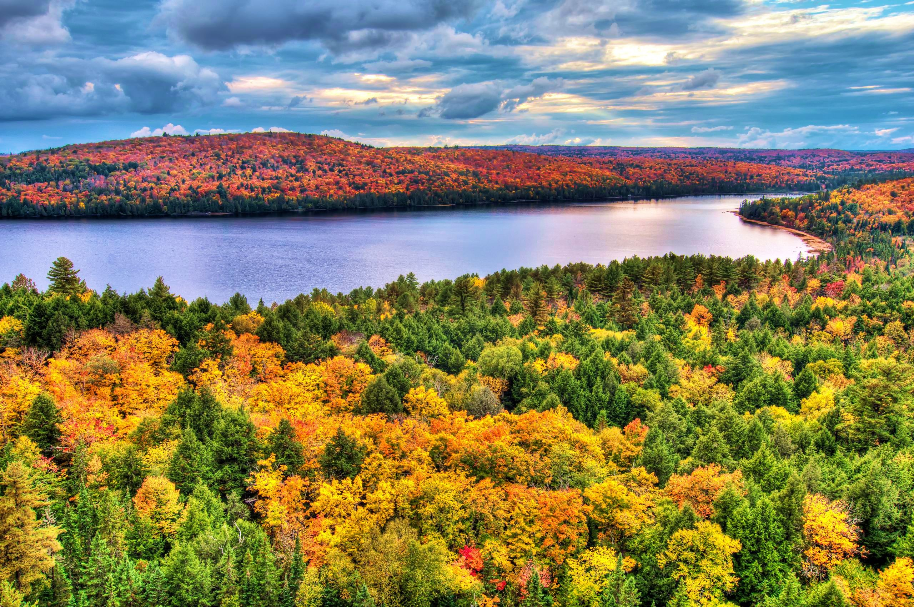
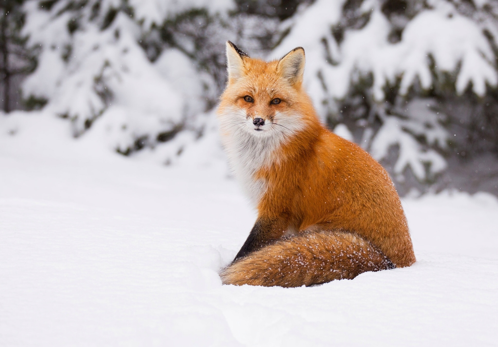

Algonquin Park
Established in 1893, Algonquin Park is the oldest park in all of Canada, but with age only comes more matured beauty. The world renowned park is made up of 7,653 square kilometers of incredible diverse and dense forests, impressive cliffs and rolling hills, and 2,400 stunning lakes and rivers. As a National Historic Site of Canada, Algonquin Park boasts many extraordinary outdoor recreation activities, everything from hiking, mountain biking, camping and wildlife viewing, on the hundreds of kilometers of trails, to canoeing, fishing and whitewater rawfting the exciting waterways. Any adventure you’re seeking, the beautiful Algonquin Park is the perfect place to find it!
Park formation
An Act to establish "Algonquin National Park of Ontario" was passed by the Liberal government of Oliver Mowat in the Ontario Legislature, May 23, 1893 (56 Vic., c.8). Although called a "national park", Algonquin has always been under the jurisdiction of the provincial government. No provincial parks existed until Algonquin, but there was a new movement to create national parks since Banff's establishment in 1885. The name was changed to Algonquin Provincial Park in 1913.
Algonquin Logging Museum
Opened in 1992, the Algonquin Logging Museum is located by the park's east gate. A 1.3 kilometres (0.81 mi) trail features a recreated logging camp, a steam-powered amphibious tug called an "alligator", logging equipment and interpretive panels about logging industry activities in the park. Exhibits include a video presentation. The museum is open seasonally. One annual feature worthy of note at the museum is "Logger's Day", typically held in late July or early August each year. This festivity includes musicians, a logger's old style lunch, activities for children, interpretive actors, and forest industry representatives.

Fishing
Fishing is allowed in the park for holders of valid Ontario fishing licences, with the purchase of a daily or seasonal vehicle permit as well available through the Ministry of Natural Resources. Fish such as bass, yellow perch, trout and pike can be found in the waterways of the park. The further an angler is willing to travel from an access point, the better the fishing. The backcountry lakes do not receive heavy fishing pressure.

Research
Algonquin Park has been an important arena for research since the 1930s. Four research facilities exist: Harkness Laboratory of Fisheries Research, Wildlife Research Station, Timber Research Station, and the visitor centre. Over 1800 scientific papers have been published on research done in the park, covering almost every aspect of the park: wildlife, geology, forestry, history, human impacts, etcetera. Also, the remote location and reasonably easy access from the National Research Council's Ottawa base of operations made the park a natural location for an eastern radio telescope, built in 1959 as the Algonquin Radio Observatory (ARO). Although radio astronomy is not as active a field of research as it was in the 1950s and 60s, the ARO continues operation today.
External Links
- Official website
- The Friends of Algonquin Park Web Site
- Algonquin Forestry Authority (AFA) Web Site
- Algonquin Map Web Site
- Searching for the Sublime - A History of Algonquin Park
- Wildlife Research Station
- The British Library Sound Archive contains over 2000 wildlife sound recordings made in Algonquin Provincial Park.
- Harkness Laboratory of Fisheries Research
- Notice regarding establishment of ‘The Algonquin National Park of Ontario’, Sept. 27, 1893, transcribed on Death On a Painted Lake: The Death of Tom Thomson
- Report of the (Ontario) Royal Commission on Forest Conservation and National Park, Mar. 8, 1893, Transcribed on "Death On A Painted Lake: The Tom Thomson Tragedy". 2007. Victoria, BC: Great Unsolved Mysteries in Canadian History project. Gregory Klages, Research Director.
- Archibald M. Campbell, "The Algonquin National Park of Ontario-Its Resources and Advantages," The Ottawa Naturalist XV (June 31, 1901): 80-89, Transcribed on "Death On A Painted Lake: The Tom Thomson Tragedy". 2007. Victoria, BC: Great Unsolved Mysteries in Canadian History project. Gregory Klages, Research Director.